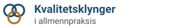
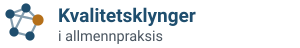
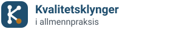

Logoforslag
Tre retninger, hver med ordmerke på lys og mørk bakgrunn og favicon i 64, 32 og 16 px. Fargene er fjordblå (#1F4E6E) og en varm aksent (rav). Teksten bruker foreløpig systemfonten. Den valgte logoen gjøres om til konturer, slik at den ser lik ut overalt.
Forslag 1: Klyngen
Tre overlappende sirkler: legene i klyngen, med en felles del i midten. Den ene sirkelen har aksentfarge og står for forbedringen i egen praksis. Rolig og lett å kjenne igjen, også i små størrelser.


Forslag 2: Nettverket
Fem sammenkoblede noder som et lite nettverk, der én node har aksentfarge. Gir mest inntrykk av fagfellesskap og deling mellom kontorer. Litt mer detaljert, så faviconen er forenklet til tre noder.


Forslag 3: Monogrammet
En K bygd av noder og linjer i en avrundet flis. Ser mest ut som et merke, og flisen fungerer godt som app-ikon og favicon. Mer formell enn de to andre.

